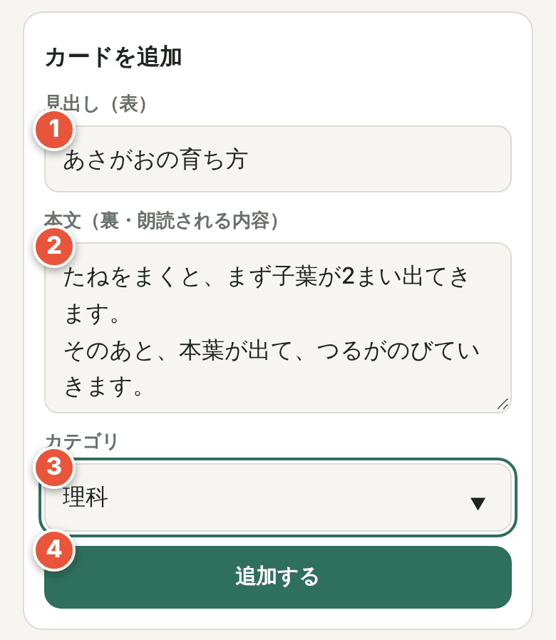
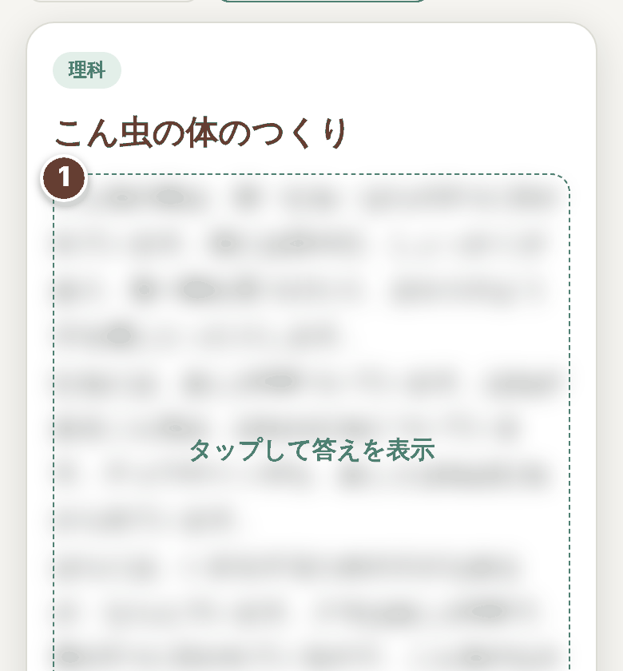
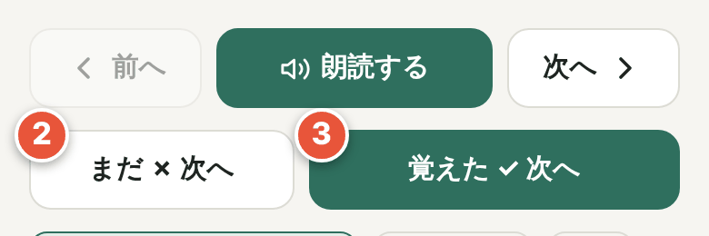
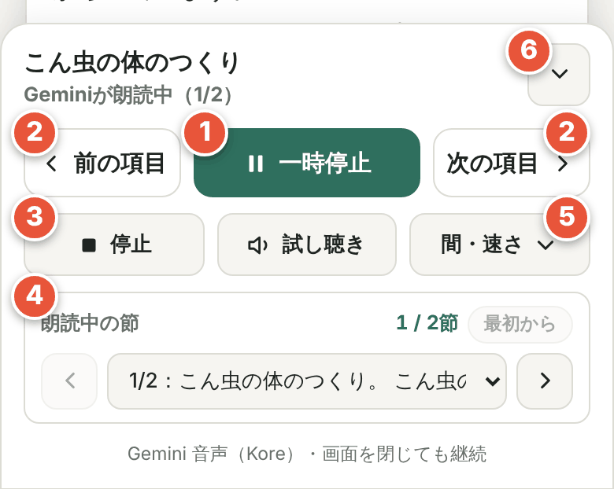
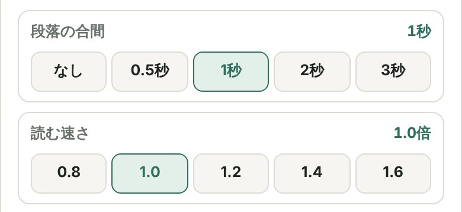
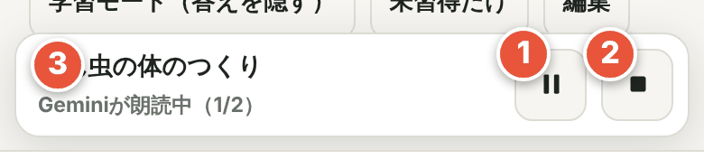
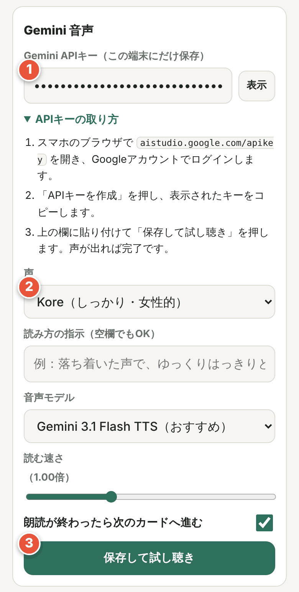
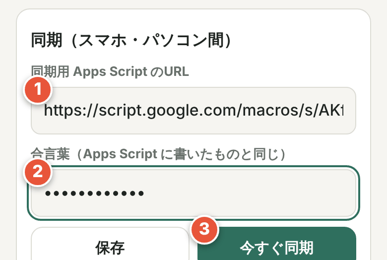

はじめる
おうちの人といっしょにスマホで開いて、ホーム画面に置いておくと、ふつうのアプリみたいに、すぐ開けるよ。
アプリを開く
- おうちの人に、アプリのアドレス（URL）を教えてもらおう。
https://tigers11922911-cyber.github.io/8303/narreji/ - スマホのブラウザで開くよ。iPhoneは「Safari（サファリ）」、Androidは「Chrome（クローム）」がおすすめ。
おうちの人へ
このアドレスは、GitHub Pages の公開設定が終わってから開けるようになります。
ホーム画面に追加する
- iPhone：下にある□↑（共有ボタン）をおす →「ホーム画面に追加」→「追加」
- Android：右上の︙をおす →「ホーム画面に追加」（「アプリをインストール」と出ることもあるよ）
- ホーム画面に、この緑のアイコンが出たらできあがり！
カードをつくる
下のメニューの「追加」をおすと、カードをつくるページになるよ。

- 1見出し カードの「おもて」。おぼえたいことの名前を書くよ。
（れい：あさがおの育ち方） - 2本文 カードの「うら」。説明を書くところ。ここが読み上げられるよ。まとまりごとに改行すると、そこで少し間をあけて読んでくれる。
- 3カテゴリ 「理科」「社会」など、なかま分けの名前。あとで、なかまごとにべんきょうできるよ。
- 4追加する おすと、カードのできあがり！
いっぺんに、たくさんつくりたいとき
下のほうにある「まとめて追加」を使おう。1行目に見出し、2行目から本文。カードとカードのあいだには --- だけの行を入れるよ。
あさがおの育ち方 たねをまくと、まず子葉が2まい出ます。 --- ひまわりの育ち方 夏になると、大きな花がさきます。
PDFからつくる
いちばん下の「PDFから追加」でPDFをえらぶをおすと、プリントや教科書のPDFからカードがつくれるよ。
- 1ページ＝1枚：PDFの文字をそのままカードにするよ。朗読するで、PDFを読み上げてもらえる。
- AIで単語帳にする：Gemini（ジェミニ）が大事なことばと説明をえらんで、カードにしてくれるよ（APIキーが必要。おうちの人に聞いてね）。
読み取るをおすと、できたカードが出てくるよ。いらないカードのチェックをはずしてから追加するをおそう。
なおしたい・消したいとき
「一覧」ページで、カードの編集で直せるよ。削除で消せる。まちがえて消したら、すぐに出る「元に戻す」をおせば大丈夫。
べんきょうする
「学習モード（答えを隠す）」をおすと、カードの答えがかくれるよ。答えを思い出してから見てみよう。


- 1タップして答えを表示 思い出せたかな？ おすと答えが見えるよ。
- 2まだ ✗ 次へ まだおぼえていなかったら、こっち。
- 3覚えた ✓ 次へ ちゃんとおぼえていたら、こっち。カードに「✓ 覚えた」のしるしがつくよ。
べんきょうのコツ
「未習得だけ」をおすと、まだおぼえていないカードだけになるよ。ぜんぶ「覚えた」になったら、きみの勝ち！ 上の「覚えた ○ / ○」で、いくつおぼえたか分かるよ。
カードをさがす
上の「すべて」をおすと、「理科」だけ、「社会」だけ、のようにえらべるよ。となりのらんに言葉を入れると、カードをさがせる。
答えをかくしているときに朗読するをおすと、見出しだけを読むよ。答えは読まないから、安心して考えてね。
読んでもらう
朗読するをおすと、下から「朗読パネル」が出てきて、カードを声で読んでくれるよ。

⑤「間・速さ」をおすと、下のボタンが出てくるよ。

- 1一時停止 ちょっと止める。もう一度おすと、つづきから読むよ。
- 2前の項目・次の項目 前や次のカードを読む。
- 3停止 読むのをやめる。止めたところをおぼえているから、次は「続きから」読めるよ。
- 4節 長い文は、いくつかのまとまり（節）に分けて読むよ。▼をおすと、読みたい節からえらべる。「最初から」で1番目にもどる。
- 5間・速さ 「段落の合間」はまとまりとまとまりのあいだに休む時間。「読む速さ」は1.0がふつう。0.8でゆっくり、1.6でとても速いよ。
- 6∨（しまう） パネルを下にしまうよ。しまっても、読むのはつづく。

パネルをしまったとき
- 1一時停止・再開
- 2停止
- 3カードの名前のところをおすと、パネルがまた出てくるよ。
声を録音して保存する
朗読パネルの「録音して保存」で、Geminiの声を音のファイル（WAV）にしてダウンロードできるよ。第○節を保存はえらんだ節だけ、全部を1つに保存はカードぜんぶを1つのファイルにするよ。学習画面の録音・保存からも開ける。（APIキーが必要。おうちの人に聞いてね）
読み方をかえる
「設定」の「読み方の変換」で、「AI → エーアイ」のように、読むときだけ言いかえさせられるよ。画面の文字はそのまま。カードの「読み（ふりがな）」に書いた読み方でも読んでくれるよ。
読み終わったら、どうなるの？
1まい読み終わると、自動で次のカードを読むよ（「設定」で止めることもできる）。スマホの画面を消しても、読みつづけるよ。イヤホンで聞くのもおすすめ。
Geminiの声にする
おうちの人がやってねはじめは、スマホの声で読むよ。Google（グーグル）のAI「Gemini（ジェミニ）」の、しぜんな声で読んでもらうには、「APIキー」というかぎが必要なんだ。

おうちの人へ：APIキーの入れ方
- スマホで
aistudio.google.com/apikeyを開き、おとなの人のGoogleアカウントでログインします（Gemini API は、おとなが使うことになっています）。 - 「APIキーを作成」をおして、出てきたキー（
AIzaではじまる文字）をコピーします。 - アプリの「設定」→ 1 の欄にはりつけます。
- 2 で、すきな声をえらびます（30しゅるい）。
- 3「保存して試し聴き」をおします。「こんにちは」と聞こえたら、できあがり！
APIキーは、ひみつ
APIキーは、おうちのカギや暗証番号と同じ。友だちに見せたり、送ったりしないでね。キーはこのスマホの中だけに保存されます。
たくさん使うと、どうなるの？
無料で使える回数には上限があるよ。上限になると、その日はスマホの声に自動で切りかわるから、べんきょうはつづけられる。一度読んだ文は声をとっておくので、同じカードなら何回聞いても回数はへらないよ。
スマホとパソコンをそろえる
おうちの人がやってねスマホでつくったカードを、パソコンやタブレットでも使えるようにすることを「同期」というよ。カードと、読み方の設定がそろうんだ。

画面の右上の丸の色で、同期のようすが分かるよ。
おうちの人へ：同期の設定
- パソコンで
script.google.comを開き、「新しいプロジェクト」をつくります。 - 中身を全部消して、GitHub の
apps-script/narreji-sync.gsの内容をはりつけます。 - 先頭の
SYNC_KEYの「ここに合言葉を書く」を、あなただけの合言葉（12文字以上がおすすめ）に書きかえて保存します。 - 「デプロイ」→「新しいデプロイ」→ 種類は「ウェブアプリ」。
実行するユーザー：自分／アクセスできるユーザー：全員 でデプロイし、許可します。 - 出てきた「ウェブアプリのURL」を 1 に、合言葉を 2 に入れて、3「今すぐ同期」をおします。
- パソコンなど、ほかの端末でも、同じURLと合言葉を入れれば、そろいます。
カードは、おうちの人の Googleドライブの narreji-sync.json というファイルに保存されます。APIキーは同期されないので、それぞれの端末で入れてください。
こまったとき
こまったら、まずここを見てね。それでもだめなら、おうちの人に聞こう。
声が聞こえない
スマホの音量を上げてみよう。iPhoneは、横のスイッチがマナーモード（オレンジ色）になっていないか見てね。ほかのアプリで音楽が流れていたら止めよう。
「端末の音声に切り替えます」と出た
Geminiの声が使えなかったので、スマホの声で読んでいるよ。電波が弱い、回数の上限になった、APIキーがまちがっている、のどれか。メッセージに理由が書いてあるよ。
右上が「同期エラー」（赤）になった
「設定」の同期のところに理由が出るよ。「合言葉が違います」なら、合言葉を入れ直そう。電波のよいところで「今すぐ同期」をおしてみてね。
カードを消しちゃった
消した直後なら、下に出る「元に戻す」をおせばもどるよ。時間がたったときは、おうちの人に「バックアップ」から読みこんでもらおう。
長いカードの、とちゅうから聞きたい
朗読パネルの「節」の▼をおして、聞きたいところをえらぼう。とちゅうで止めたときは、次は自動で「続きから」読むよ。
画面がへんになった・動かない
アプリを一度とじて、もう一度開いてみよう。カードは消えないから大丈夫。
おうちの人へ：バックアップ
「設定」→「データ」の「バックアップを書き出す」で、カードをファイルに保存できます。「バックアップを読み込む」で元にもどせます。ときどき書き出しておくと安心です。
ことばのじてん
- 朗読
- 声に出して、文を読むこと。
- 節
- 長い文を読むときの、ひとまとまり。
- 項目
- このアプリでは、カード1まいのこと。
- Gemini（ジェミニ）
- Googleがつくった AI。このアプリでは、文を声にしてくれる。
- APIキー
- Geminiを使うための、ひみつのかぎ。人に教えない。
- 同期
- スマホとパソコンなどで、中身を同じにそろえること。
- 合言葉
- 同期のときに使う、ひみつのことば。人に教えない。
- 端末
- スマホ、タブレット、パソコンのこと。
- カテゴリ
- カードのなかま分け。「理科」「社会」など。
- バックアップ
- だいじなデータを、ファイルにとっておくこと。
3つのやくそく
- APIキーと合言葉は、だれにも教えない。
- イヤホンの音は、大きくしすぎない。
- わからないときは、おうちの人に聞く。